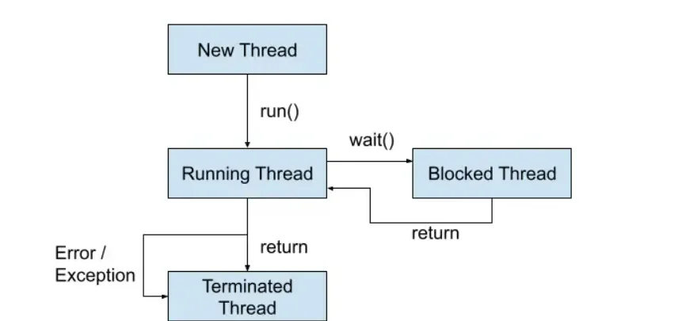
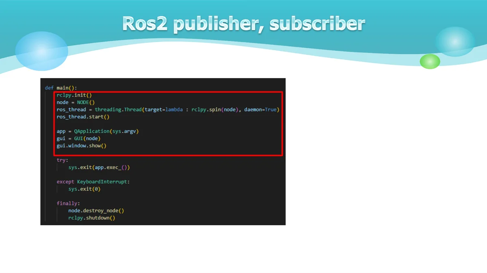
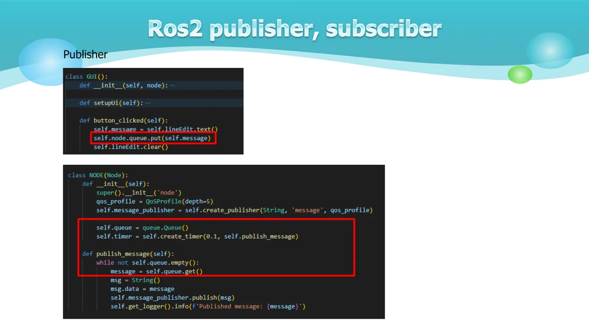
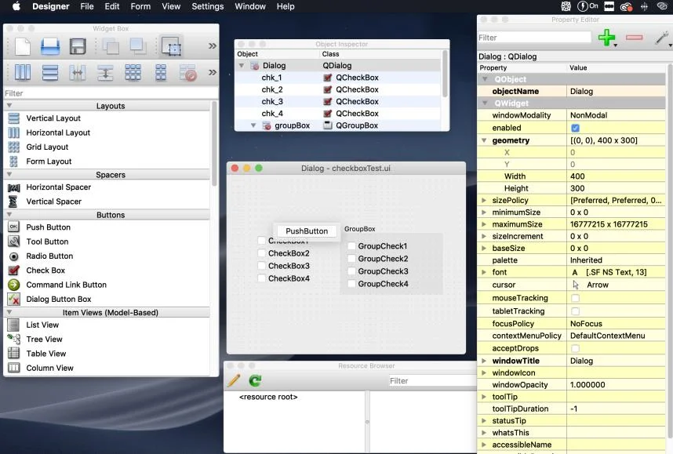
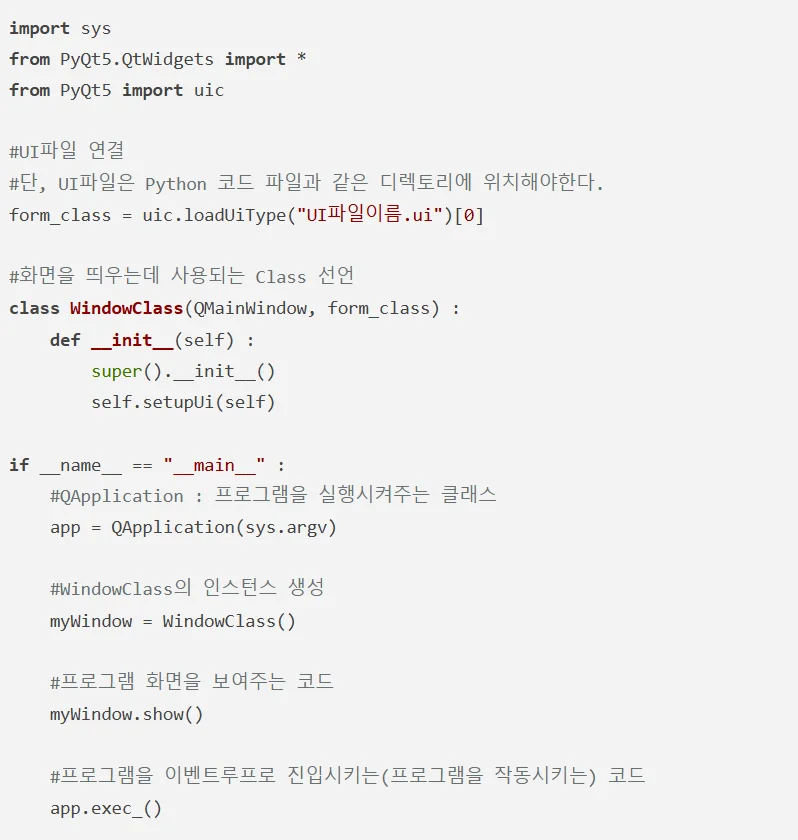
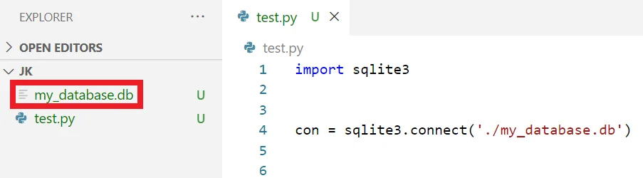

쓰레드와 데이터베이스¶
Thread와Sqlite3 - 방화벽 해지 sudo ufw disable - Wifi 설정 Rokey / rokey12345 - 같은ROS_DOMAIN_ID에 영향을 안 받게하기 export $ROS_LOCALHOST_ONLY=1 김 루 진 강사
쓰 레드를 사용하는 주된 이유는 프로그램의 성능과 응답성을 향상시키기 위해서입니다. 특히ROS2와PyQt GUI를 함께 사용할 때 더욱 중요합니다.
프로세스와 쓰 레드 프로그램이 하나의 일을 처리할 때, CPU는 메모리에 프로그램에 관련된 DATA를 저장하고 처리하게 된다. 이렇게 일련의 프로그램을 진행하는 것 을 프로세스(Process)라고 한다. 하나의 프로그램을 실행시키면, 그프 로 그램은 한 개의 프로세스를 가지게 된 다.
프로세스와 쓰 레드 새로운 프로세스를 생성하는 것을 프로세스 포크(Fork) 프로세스는 프로그램이 작동하기에 필요한 많은 데이터를 가지고 있다. 프로세스 포크를 하게 되면, 새로 생성된 프로세스는 이전의 프로세스와 동일한 데이터를 카피 프로세스 간의 데이터 공유를 위해 많은 뒤처리가 필요하고, 또한 컴퓨터 자원의 소모 야기 새로운 프로세스는 필요하지 않지만, 하나의 일을 따로 처리해야할 때 사용하는 것이 쓰 레드 멀티 쓰 레드와 멀티 프로세스의 가장 큰 차이는 자원 공유
GUI 응답성 유지 GUI는메인쓰레드(이벤트루프)에서 실행됨 시간이 오래 걸리는 작업을 메인 쓰 레드에서 실행하면GUI가멈춤 별도 쓰 레드로 실행하면GUI가 계속 반응 가능 ROS2 통신 처리 ROS2의publish/subscribe 통신은 지속적으로 발생 메인 쓰 레드에서 처리하면 다른 작업 수행 불가 별도 쓰 레드로 분리하여 동시 처리 가능
자원 효율성 멀티 코어CPU 활용 가능 작업을 병렬로 처리하여 성능 향상 시스템 리소스 효율적 사용 데드 락 방지 GUI 이벤트 처리와ROS2 통신을 분리 상호 블로킹 현상 방지 안정적인 프로그램 실행 threading 모듈의Thread 클래스를 사용 Thread 객체를 생성할 때target 매개 변수에 실행할 함수를 지정하고, 필요에 따라args 매개변수를 사용
파이썬에서 클래스를 쓰 레드로 만들기 위해서는threading 모듈의Thread 클래스를 상속하거나, Thread 인스턴스를 생성할 때target 매개 변수에 함수를 지정하는 방법을 사용
생성 단계 시작(Started) 단계

실행(Running) 단계 대기(Waiting) 단계 종료(Terminated) 단계
Publisher.py Subscriber.py Main thread Gui (pyqt) node Sub thread Gui (pyqt) node Sub thread Main thread

Publisher Subscriber Gui (pyqt) node Gui (pyqt) node Queue Signal Topic

Subscriber

$ sudo pip3 install PySide2 $ designer Qt Designer의UI는 저장 버튼(Control + S / Command + S)를 누르면 저장을 할 수 있습니다. 저장된UI파일은XML의 형식을 가짐 Python 코드에서 이XML 파일을Import한 후 위젯들에 기능을 할당해 주면 실제로 기능을 가지고 작동하는 GUI프로그램이 완성 직접XML형식의ui파일을 수정하여 레이아웃을 수정할 수도 있습니다.

UI파일을Python에Import하여 사용하는 방법 https://wikidocs.net/35481

체계적으로 구조화된 데이터의 집합으로, 효율적인 데이터 관리와 검색을 위한 시스템 주요 특징: 1.데이터 독립성 -물리적 독립성: 저장 구조가 변경되어도 응용 프로그램에 영향 없음 -논리적 독립성: 논리적 구조 변경이 응용 프로그램에 영향 없음 2.데이터 무결성 -정확성과 일관성 보장 -제약 조건을 통한 데이터 품질 유지 -중복 최소화 3.동시성 제어 -여러 사용자의 동시 접근 관리 -데이터 일관성 유지 -트랜잭션 처리
-테이블(릴레이 션) -필드(속성, 컬럼) -레코드(튜플, 행) -키(기본 키, 외래키) -인덱스 -뷰 DDL(Data Definition Language) DML(Data Manipulation Language)
One-to-One (1:1) CREATE TABLE user ( user_id INT PRIMARY KEY, name VARCHAR(50) ); CREATE TABLE passport ( passport_id INT PRIMARY KEY, user_id INT UNIQUE, FOREIGN KEY (user_id) REFERENCES user(user_id) );
One-to-Many (1:N) CREATE TABLE department ( dept_id INT PRIMARY KEY, dept_name VARCHAR(50) ); CREATE TABLE employee ( emp_id INT PRIMARY KEY, dept_id INT, name VARCHAR(50), FOREIGN KEY (dept_id) REFERENCES department(dept_id) );
Many-to-Many (N:M) CREATE TABLE student ( student_id INT PRIMARY KEY, name VARCHAR(50) ); CREATE TABLE course ( course_id INT PRIMARY KEY, title VARCHAR(100) ); CREATE TABLE enrollment ( student_id INT, course_id INT, PRIMARY KEY (student_id, course_id), FOREIGN KEY (student_id) REFERENCES student(student_id), FOREIGN KEY (course_id) REFERENCES course(course_id) );
SQLite3는 파일 기반의 경량 관계형 데이터 베이스 시스템
장점¶
- 서버가 필요 없음(파일 기반)
- 설치가 필요 없음(Python 기본 내장)
- 가볍고 빠름
- 단일 파일로 관리
- 트랜잭션 지원
- Zero-configuration
제한사항¶
- 동시 접근 제한
- 대규모 데이터에는 부적합
- 복잡한 쿼리에 제한적
-- 테이블 정보(table_order) CREATE TABLE IF NOT EXISTS table_order ( table_id INTEGER PRIMARY KEY AUTOINCREMENT, table_number INTEGER NOT NULL, capacity INTEGER NOT NULL, status TEXT DEFAULT 'empty' CHECK(status IN ('empty', 'occupied', 'reserved')), created_at TIMESTAMP DEFAULT CURRENT_TIMESTAMP );
-- 메뉴 정보(menu) CREATE TABLE IF NOT EXISTS menu ( menu_id INTEGER PRIMARY KEY AUTOINCREMENT, name TEXT NOT NULL, price REAL NOT NULL, category TEXT NOT NULL, description TEXT, available BOOLEAN DEFAULT 1, created_at TIMESTAMP DEFAULT CURRENT_TIMESTAMP );
-- 주문 목록(order_list) CREATE TABLE IF NOT EXISTS order_list ( order_id INTEGER PRIMARY KEY AUTOINCREMENT, table_id INTEGER, total_amount REAL DEFAULT 0, order_status TEXT DEFAULT 'pending' CHECK(order_status IN ('pending', 'preparing', 'served', 'completed', 'cancelled')), created_at TIMESTAMP DEFAULT CURRENT_TIMESTAMP, FOREIGN KEY (table_id) REFERENCES table_order(table_id) );
-- 주문 상세 항목(order_items) CREATE TABLE IF NOT EXISTS order_items ( order_item_id INTEGER PRIMARY KEY AUTOINCREMENT, order_id INTEGER, menu_id INTEGER, quantity INTEGER NOT NULL, price REAL NOT NULL, subtotal REAL NOT NULL, created_at TIMESTAMP DEFAULT CURRENT_TIMESTAMP, FOREIGN KEY (order_id) REFERENCES order_list(order_id), FOREIGN KEY (menu_id) REFERENCES menu(menu_id) );
-- 취소 정보(cancel) CREATE TABLE IF NOT EXISTS cancel ( cancel_id INTEGER PRIMARY KEY AUTOINCREMENT, order_id INTEGER, cancel_reason TEXT NOT NULL, refund_amount REAL DEFAULT 0, cancel_status TEXT DEFAULT 'pending' CHECK(cancel_status IN ('pending', 'approved', 'rejected')), created_at TIMESTAMP DEFAULT CURRENT_TIMESTAMP, FOREIGN KEY (order_id) REFERENCES order_list(order_id) );
데이터 베이스를 생성할 때는 간단히connect() 메서드를 사용하면 된다. 이때 메서드의 인자로 넣은 값이 데이터 베이스 파일의 경로가 된다. 예를 들어'my_database.db'라는 파일을 생성하고자한다면 다음과 같이 한다. 현재'my_database.db'라는 데이터 베이스 파일이 없기 때문에, 새롭게 생성된 것을 확인할 수 있다.

SQL 구문을 이용하기 위해서는cursor 객체가 필요하다. cursor 객체를 이용하여 실제로 데이터베이스에 테이블(table)을 삽입하거나, 테이블(table)을 조회할 수 있다. 예를 들어 다음의 명령어는Course(과목)라는 이름의 테이블을 생성한다. 이후에 생성된 테이블 정보를 조회한다. cursor = con.cursor() SQL = "CREATE TABLE Course (Course_ID int primary key not null, Course_Name text, Course_Date date);" cursor.execute(SQL) SQL = "SELECT name FROM sqlite_master WHERE type='table';" cursor.execute(SQL) print(cursor.fetchall()) SQL = "SELECT sql FROM sqlite_master WHERE type='table';" cursor.execute(SQL) print(cursor.fetchall()) con.close()
SQL = "INSERT INTO Course VALUES(1, 'Algorithm', '2021-03-01');" cursor.execute(SQL) SQL = "INSERT INTO Course VALUES(2, 'Data Structure', '2021-03-02');" cursor.execute(SQL) SQL = "INSERT INTO Course VALUES(3, 'Computer Architecture', '2021-03-05');" cursor.execute(SQL) con.commit() SQL = "SELECT * FROM Course;" cursor.execute(SQL) print(cursor.fetchall()) con.close()
데이터 삭제는DELETE 구문을 사용하면 된다. 예를 들어Course 테이블에 있는 모든 데이터(row)를 삭제하기 위해서는 다음과 같이 하면 된다. INSERT 구문과 마찬가지로 실행 뒤에commit() 메서드를 이용해DB에 반영할 수 있다. 위 코드를 실행하면Course 테이블에 존재하는 모든 데이터가 삭제되기 때문에, 조회 결과가 없다. cursor = con.cursor() SQL = "DELETE FROM Course;" cursor.execute(SQL) con.commit() SQL = "SELECT * FROM Course;" cursor.execute(SQL) print(cursor.fetchall()) con.close()
def insert_course(course_id, course_name, course_date): con = sqlite3.connect(database_name) cursor = con.cursor() SQL = "INSERT INTO Course VALUES(?, ?, ?);" cursor.execute(SQL, (course_id, course_name, course_date)) con.commit() con.close()
def insert_course_list(course_list): con = sqlite3.connect(database_name) cursor = con.cursor() SQL = "INSERT INTO Course VALUES(?, ?, ?);" cursor.executemany(SQL, course_list) con.commit() con.close()
def search_course_by_name(course_name): con = sqlite3.connect(database_name) cursor = con.cursor() SQL = "SELECT * FROM Course WHERE course_name = ?;" cursor.execute(SQL, (course_name, )) return cursor.fetchall()
def update_course_by_id(course_id, course_name, course_date): con = sqlite3.connect(database_name) cursor = con.cursor() SQL = "UPDATE Course SET course_name = ?, course_date = ? WHERE course_id = ?;" cursor.execute(SQL, (course_name, course_date, course_id)) con.commit() con.close()
def delete_course_by_id(course_id): con = sqlite3.connect(database_name) cursor = con.cursor() SQL = "DELETE FROM Course WHERE course_id = ?;" cursor.execute(SQL, (course_id, )) con.commit() con.close()